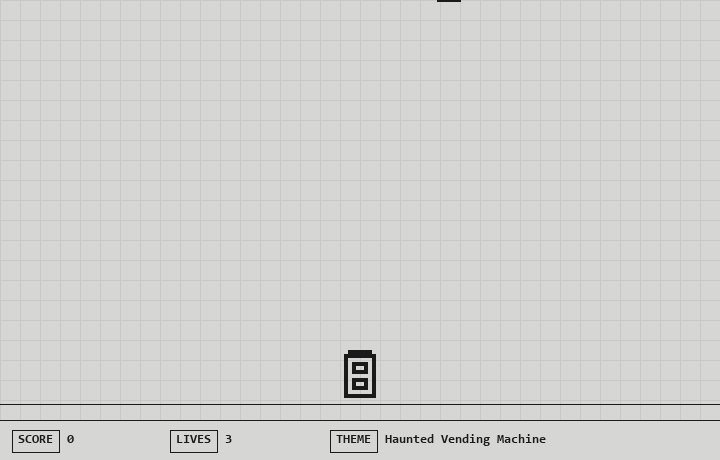

I gave a fake game jam an AI studio-mate, put 18 studio tools behind a single Toolbox endpoint on Foundry, wrapped the whole flow in Routines (kickoff → prototype → playtest → ship), and let the GitHub Copilot SDK's code-emitting muscle write a real playable HTML5 game to disk. Same principle as the other demos — big box, tiny context — but this one you can actually play at the end.

pixel-jam-studio runs a 48-hour jam in about 30 seconds of terminal output:
index.htmlNine plain-English turns, nine different studio stations. It runs locally with make demo — no Azure, no model key. When it finishes, it prints a file:// link to a real playable HTML5 canvas game.
Same as the others: {"type": "toolbox_search_preview"} is on, so the model only ever sees tool_search (say what you need) and call_tool (run it). Eighteen studio tools behind the box, two in front of the model.
What's new here is the code-emission moment: one of those tools, code_scribe.write_game, is the "coding-agent" step. In this demo it stamps a real playable game from a template; in --live mode the Copilot SDK writes the source itself.
>_ user: "okay, write the actual game code now"
[tool_search] query: "write a complete playable html5 canvas game to disk from the spec" // round-trip #5
[matched] code_scribe.write_game, asset_studio.generate, playtest_arcade.run, ...
[call_tool] code_scribe.write_game({ theme:"Haunted Vending Machine", sprites:..., bgm:... })
=> wrote game-output/index.html (~200 lines) — open it in a browser to play
tools in box: 18 · tools in model context: 2
| Piece | What it does | Why it's here |
|---|---|---|
| Toolbox with Tool Search on Foundry | One MCP endpoint hides 18 tools; only tool_search + call_tool reach the model | Big box, tiny context. Add a 19th studio tool without touching agent code. |
| Routines | Named phases (kickoff, prototype, playtest_loop, ship_it) that group the calls | Shapes the "ceremony" of the jam; makes the flow legible on screen and easy to re-run. |
| GitHub Copilot SDK | Same agent runtime that powers Copilot CLI, embeddable in any app via JSON-RPC | It's the code-emitter. Games are files; the SDK's whole point is that an agent can write files. code_scribe.write_game is where a real Copilot-SDK agent takes over in --live. |
The reason those three pillars are here together, and not any one alone:
Together they're the shape of a real agent app: governed tool discovery + a routine that shapes intent + an agent that emits real artifacts.
tool_search + call_tool)tool_search round-trips: 9kickoff, prototype, playtest_loop, ship_it)leaderboard_cabinet.post)Prereqs: Python 3.10+. Nothing else. No Azure, no model key, no dependencies to install.
git clone https://github.com/LadyNaggaga/creativetoolbox
cd creativetoolbox/demos/pixel-jam-studio
make demo # runs the jam, writes game-output/index.html
make play # opens the game in your default browser
That's it. make demo starts the local Toolbox emulator, walks through the nine turns, and drops a real playable index.html in game-output/. make play opens it.
Controls: ← → or A/D to move · P to pause · R to restart · click ▶ START to begin (the intro types itself out first).
Want to remix it?
mock-backends/hero_tools/theme_wheel_spin.pymock-backends/tools.json — the agent code doesn't changemock-backends/hero_tools/code_scribe_write_game.py — that's the template a real Copilot-SDK agent would replace with model-generated codepip install -e "python/.[live]" # installs github-copilot-sdk
python python/main.py --live
In --live mode the Copilot SDK drives the whole loop from your app: it calls tool_search/call_tool itself and, at the code-emission step, writes the game source directly rather than stamping a template.
Tool Search is in preview. The scripted mode uses a local emulator that ranks by keyword overlap — it's a faithful stand-in for the shape of the real endpoint, but the production ranker is smarter. The game is deliberately tiny (one screen, three sprite kinds, two SFX) — the point is that an agent can emit a playable, opinionated artifact from a spec, not that this specific game is a masterpiece.